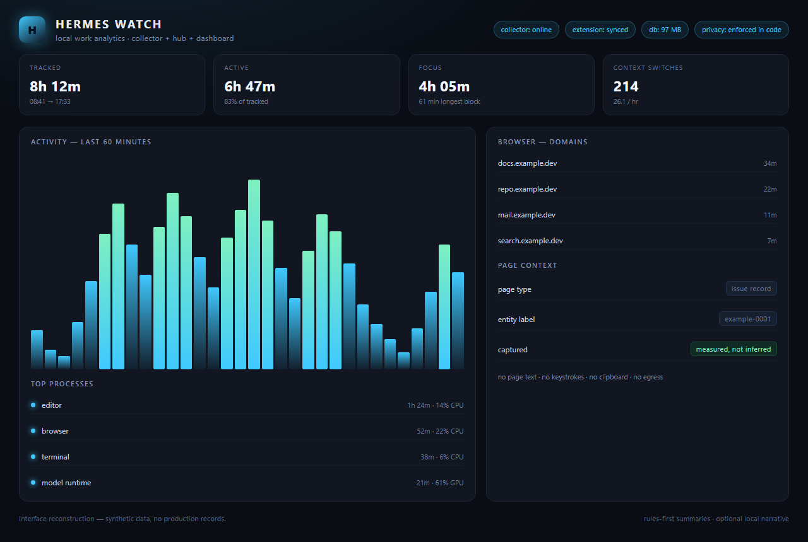

Hermes Watch
Local work analytics for Windows · Python, SQLite, Chrome extension
I designed this end to end. I did not code it — the implementation was curated with AI tools.
A portable Windows app that samples machine and human activity and turns it into an honest daily summary. A native collector records CPU, memory, disk, network and GPU load, the foreground window, per-process I/O and idle time. A Chrome extension covers the browser half: open tabs per profile, the active tab, time per domain, and a deliberately narrow page context — with no page text, keystrokes, clipboard contents or screenshots ever read. Everything lands in one SQLite database in WAL mode, and a localhost dashboard streams live state over Server-Sent Events. Summaries run on a deterministic rules engine, with a language model only optionally adding narrative.